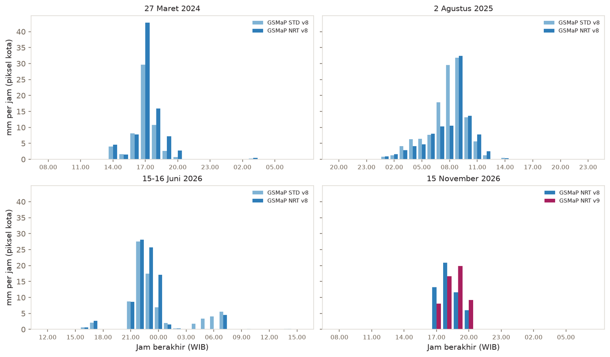
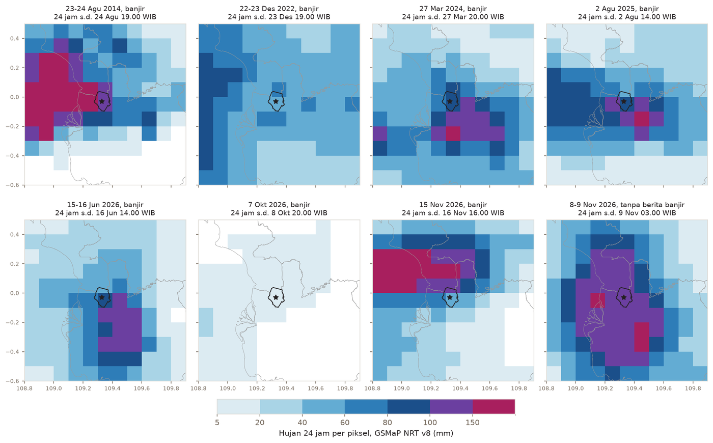

Daftar isi
Minggu, 15 November 2026, sejumlah jalan utama di Kota Pontianak kembali tergenang hanya dalam hitungan jam setelah hujan deras. Genangan seperti ini bukan hal baru di kota yang datar dan dibelah Sungai Kapuas. Tulisan ini membaca hujan pada tujuh banjir Pontianak yang diberitakan, dari Agustus 2014 sampai November 2026, dengan arsip satelit GSMaP sejak 1998, lalu membandingkannya dengan angka pos hujan BMKG yang dipublikasikan. Ada tiga temuan. Pada tiga banjir yang punya angka pos, hujannya 101 sampai 154 mm sehari, di atas 80 mm, angka yang menurut BMKG sering memicu banjir di Pontianak. Satelit sering mencatat hujan itu jauh lebih kecil. Pasang Sungai Kapuas ikut memperparah sedikitnya dua di antaranya.

Banjir yang diberitakan
- 23–24 Agustus 2014. Hujan deras selama Sabtu dan Minggu. Jalan Sutoyo, WR Supratman, S Parman, dan gang-gang di Sungai Jawi tergenang 30 sampai 50 cm. Menurut prakirawan Stasiun Meteorologi Maritim Pontianak, Sungai Kapuas pasang sampai 2 meter pada kedua hari itu, dengan puncak sekitar pukul 17.00 sampai 18.00 (JPNN).
- 22–23 Desember 2022. Hujan sangat lebat. Pos hujan di Kota Pontianak mencatat 101 mm, hujan harian tertinggi untuk bulan Desember sejak 2007. Pagi 23 Desember, muka air Kapuas di Pontianak di atas 250 cm dari pukul 04.00 sampai 09.00 WIB, dengan puncak 284 cm pukul 06.00, tertinggi ke-3 sejak 2007. BMKG menyebut gabungan hujan lebat dan pasang maksimum sebagai pemicu utama banjir di pesisir barat Kalimantan Barat (BMKG Kalbar; Jurnal Teknik Sipil ITB).
- 27 Maret 2024. Hujan turun sekitar pukul 13.00 sampai 21.00 WIB. Jalan Gajahmada, WR Supratman, dan Purnama 1 tergenang (Suara Kalbar). Stasiun Meteorologi Maritim Pontianak mencatat 154 mm hari itu, kategori ekstrem. Sebagian besar jalan, sejumlah kantor, dan rumah warga tergenang (BMKG Kalbar).
- 2 Agustus 2025. Hujan deras sejak dini hari sampai pagi. Air masuk rumah di Jalan Pangeran Natakusumah sekitar pukul 07.00, dan Jalan Purnama tergenang setinggi mata kaki sampai betis (RRI). Stasiun Meteorologi Maritim Pontianak mencatat 113 mm hari itu (Buletin Iklim BMKG Kalbar, September 2025).
- 15–16 Juni 2026. Hujan mulai sekitar pukul 22.00 WIB dan berlangsung sampai menjelang subuh. Simpang Alianyang dan Jalan Uray Bawadi tergenang setinggi betis (RRI).
- 7 Oktober 2026. Hujan deras sekitar satu jam pada Rabu malam menggenangi Jalan A Yani sampai Jalan Gajah Mada dan permukiman di Jalan Purnama. Genangan surut Kamis pagi (Wartabanjar).
- 15 November 2026. Hujan deras pada Minggu menggenangi sejumlah jalan utama dan permukiman dalam hitungan jam (Pontianak Post).
Apa kata satelit
Kota Pontianak hanya sekitar 118 km², kira-kira seluas satu piksel GSMaP (0,1°, sekitar 11 km). Karena itu angka di bawah adalah hujan di piksel yang menutupi pusat kota. Produk yang dipakai adalah GSMaP Standard (STD) v8 yang diarsipkan sejak 1998, NRT v8 sejak 2014, serta STD v9 dan NRT v9 yang baru tersedia sejak Oktober 2026. Untuk tiap kejadian, angka yang dicatat adalah hujan 24 jam terbesar dalam dua sampai tiga hari di sekitar tanggal banjir.
| Hujan 24 jam terbesar (mm) | Pos BMKG | STD v8 | NRT v8 | STD v9 | NRT v9 |
|---|---|---|---|---|---|
| 23–24 Agu 2014 | – | 123 | 141 | – | – |
| 22–23 Des 2022 | 101 | 50 | 58 | – | – |
| 27 Mar 2024 | 154 | 61 | 86 | – | – |
| 2 Agu 2025 | 113 | 126 | 100 | – | – |
| 15–16 Jun 2026 | – | 81 | 89 | – | – |
| 7 Okt 2026 | – | 8 | 12 | – | – |
| 15 Nov 2026 | – | belum ada | 56 | belum ada | 59 |
Waktu hujan menurut satelit umumnya cocok dengan berita.
- Pada 27 Maret 2024, hujan di piksel kota turun pada jam yang berakhir 14.00 sampai 20.00 WIB. Jam terderas berakhir pukul 17.00: 30 mm menurut STD v8 dan 43 mm menurut NRT v8.
- Pada 2 Agustus 2025, hujan mulai sekitar pukul 01.00 WIB dan memuncak pada jam yang berakhir 08.00 sampai 09.00, sekitar 30 mm per jam. Itu sedikit setelah air masuk rumah sekitar pukul 07.00.
- Pada 15–16 Juni 2026, jam terderas berakhir pukul 22.00, sekitar 28 mm, lalu hujan melemah setelah tengah malam.
- Pada 15 November 2026, menurut NRT v8 dan v9, hujan turun pada jam yang berakhir 17.00 sampai 20.00 WIB, sekitar 52 sampai 54 mm dalam enam jam.

Besarnya yang sering berbeda. Pada Desember 2022 dan Maret 2024, satelit mencatat hanya sekitar setengah dari hujan pos, atau kurang. Hanya pada Agustus 2025 angka satelit dan pos hampir sama. Hujan sekitar satu jam pada 7 Oktober 2026 hampir tidak tercatat satelit, mungkin karena terlalu singkat dan sempit untuk satu piksel 11 km.
Di mana hujannya jatuh
Peta berikut memakai GSMaP NRT v8, satu-satunya produk yang tersedia untuk ketujuh banjir, sehingga semua panel bisa dibandingkan. Tiap panel menunjukkan hujan 24 jam pada periode terbasah di piksel kota.

- Pada Maret 2024, Agustus 2025, dan Juni 2026, inti hujan terletak di Kubu Raya, tepat di selatan atau tenggara kota, 130 sampai 177 mm.
- Pada Agustus 2014, inti hujan terbesar ada di sekitar muara Kapuas di barat kota: lebih dari 400 mm di satu piksel di laut, dan 282 mm di pesisir Kubu Raya.
- Pada 15 November 2026, hujan 250 mm lebih jatuh di laut dan pesisir Mempawah di barat laut kota, sedangkan piksel kota sendiri mencatat 56 mm.
- Pada Desember 2022 dan Oktober 2026, satelit tidak mencatat inti hujan yang jelas di dekat kota.
- Pada 8–9 November 2026, hujan lebih dari 100 mm menutupi hampir seluruh kota dan sekitarnya, lebih luas daripada kebanyakan banjir di atas, tetapi belum kami temukan berita banjirnya.
Seberapa besar untuk Pontianak?
Menurut GSMaP STD v8, hujan 24 jam terbesar tiap tahun di piksel kota pada 1998–2025 bermedian 130 mm, dan terbesar 277 mm. Hari dengan hujan 80 mm atau lebih rata-rata terjadi 2,7 kali per tahun, antara 0 dan 6 kali. Jadi hujan sebesar ambang BMKG bukan kejadian langka di Pontianak.
Menurut satelit, hanya hujan Agustus 2014 dan Agustus 2025 yang mendekati hujan terbesar dalam setahun biasa. Pada empat banjir lainnya, satelit mencatat 50 sampai 90 mm, dan banjir Oktober 2026 hampir tidak tercatat. Namun angka pos pada Desember 2022 dan Maret 2024 menunjukkan hujan sebenarnya bisa jauh lebih besar daripada catatan satelit. Karena itu, angka satelit yang di bawah 80 mm belum tentu berarti hujan di kota kecil.
Hujan besar tanpa berita banjir
Sebaliknya, ada hari dengan hujan besar yang belum kami temukan beritanya.
- 22 Agustus 2017. Buletin iklim BMKG Kalbar menyebut 223 mm/hari sebagai rekor hujan harian di wilayah Pontianak. GSMaP hanya mencatat 13 sampai 16 mm dalam 24 jam di piksel kota.
- Rabu siang, 4 November 2026. Keempat produk mencatat hujan deras yang singkat sekitar pukul 12.00 sampai 15.00 WIB, tetapi besarnya berbeda jauh: 164 mm menurut STD v8, 138 mm menurut NRT v9, 102 mm menurut STD v9, dan 67 mm menurut NRT v8. STD v8 mencatat 105 mm dalam satu jam saja, sedangkan STD v9 mencatat 50 mm pada jam yang sama.
- 8–9 November 2026. Keempat produk paling seragam: 109 sampai 123 mm, dengan hujan terderas pada Minggu sore sampai malam.
Hujan 8–9 November dua kali lebih besar daripada hujan menjelang banjir 15 November menurut satelit. Bisa jadi genangan saat itu tidak diberitakan. Bisa juga hujannya tidak sebesar catatan satelit, atau air Kapuas sedang surut sehingga saluran kota lebih lancar.
Yang bisa dipelajari
- Pada tiga banjir dengan angka pos, hujannya 101 sampai 154 mm sehari, di atas 80 mm. Ini cocok dengan catatan BMKG bahwa banjir di Pontianak sering terjadi saat hujan lebih dari 80 mm sehari.
- Satelit menangkap waktu hujan dengan baik, tetapi sering mencatat besarnya lebih kecil daripada pos. Ambang untuk peringatan dari satelit perlu disesuaikan dengan pos hujan setempat, tidak bisa disalin langsung dari angka pos.
- Pada Agustus 2014 dan Desember 2022, banjir terjadi saat Kapuas pasang tinggi. BMKG mencatat bahwa muka air Kapuas di atas 250 cm biasanya sudah menggenangi daerah rendah di dekat sungai. Hujan dan pasang perlu dibaca bersama.
Batasan
- Nilai satelit adalah hujan per piksel 0,1° (sekitar 11 km), tanpa koreksi pos hujan. Hujan di satu titik bisa jauh lebih besar atau lebih kecil.
- Angka pos diambil dari publikasi BMKG untuk tiga banjir dan satu rekor. Seri pos harian lengkap dan seri muka air Kapuas tidak dipakai.
- Angka pos adalah hujan satu hari pengamatan, sedangkan angka satelit adalah hujan 24 jam terbesar dari jam mana pun di sekitar kejadian. Hujan satelit untuk hari yang sama dengan pos tidak lebih besar daripada angka di tabel, sehingga selisih satelit dan pos tidak lebih kecil daripada yang tertulis.
- Daftar banjir diambil dari berita yang ditemukan dan tidak lengkap. Hari tanpa berita banjir belum tentu tanpa genangan.
- Produk Standard untuk 15 November 2026 belum tersedia saat tulisan ini dibuat. STD v9 dan NRT v9 baru tersedia sejak Oktober 2026.
- Median dan jumlah hari hujan 80 mm dihitung dari GSMaP STD v8 di satu piksel, tanpa analisis frekuensi, sehingga bukan kala ulang.
Rujukan
- JPNN, 24 Agustus 2014. Banjir terjang Pontianak.
- BMKG Stasiun Meteorologi Kelas I Supadio, 23 Desember 2022. Analisis lengkap cuaca ekstrem Kalimantan Barat tanggal 23 Desember 2022.
- Jurnal Teknik Sipil ITB. Kajian hujan lebat Pontianak 22–23 Desember 2022 dengan model WRF-ARW.
- Suara Kalbar, 28 Maret 2024. Kota Pontianak langganan banjir, warga minta pemerintah beri solusi.
- BMKG Kalbar. Banjir Pontianak 27 Maret 2024.
- RRI, 3 Agustus 2025. Banjir rendam rumah warga dan jalan di Pontianak.
- BMKG Kalbar. Buletin Iklim edisi September 2025.
- RRI, 16 Juni 2026. Hujan semalaman, banjir rendam sejumlah ruas jalan Pontianak.
- Wartabanjar, 8 Oktober 2026. Hujan deras guyur Pontianak sekitar satu jam, sejumlah permukiman tergenang.
- Pontianak Post, 15 November 2026. Banjir kembali rendam jalan utama Pontianak, saluran air perlu dibenahi.
- JAXA. GSMaP Standard v8 dan v9, NRT v8 dan v9 (tanpa koreksi pos hujan), per piksel, diolah HESLab.